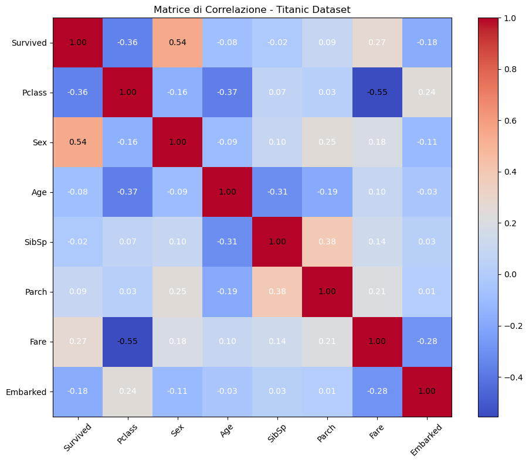
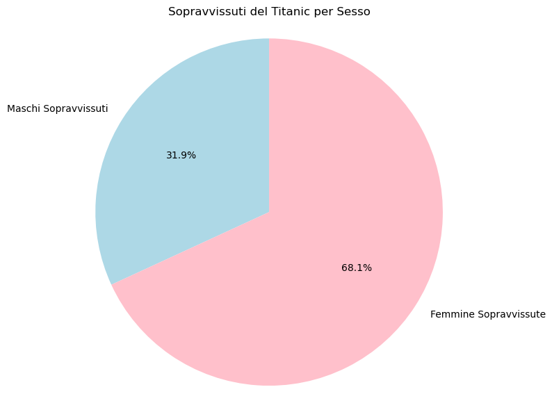
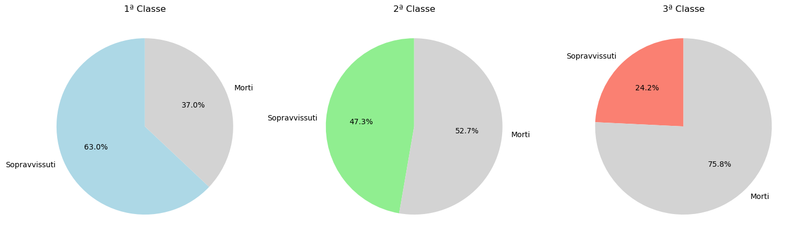
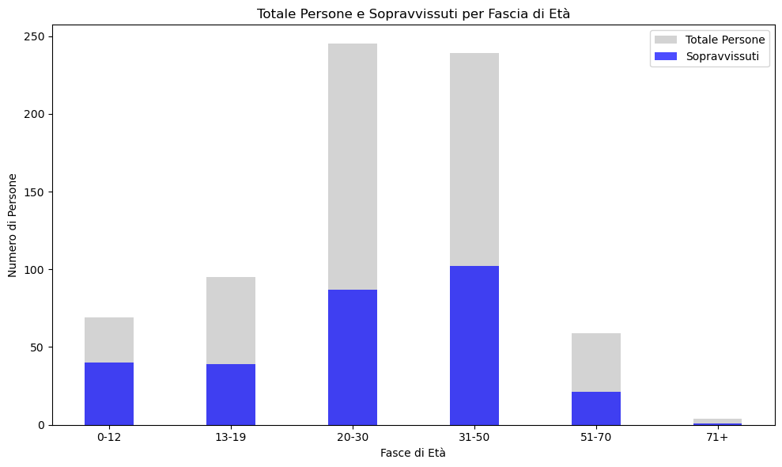

#Probabilità di sopravvivenza al Titanic Le analisi sono state svolte sui dati dei passeggeri del Titanic (training set Titanic). ##Matrice di correlazione
import pandas as pdimport numpy as npimport matplotlib.pyplot as plt# Carica il datasettitanic_data = pd.read_csv('titanic.csv')# Prepara i dati# Converti le variabili categoriche in numerichetitanic_data['Sex'] = titanic_data['Sex'].map({'male': 0, 'female': 1})titanic_data['Embarked'] = titanic_data['Embarked'].map({'C': 0, 'Q': 1, 'S': 2}) # Converti 'Embarked' in numerico# Rimuovi le righe con valori NaN in 'Age'titanic_data = titanic_data.dropna(subset=['Age'])# Seleziona le colonne di interessecorrelation_data = titanic_data[['Survived', 'Pclass', 'Sex', 'Age', 'SibSp', 'Parch', 'Fare', 'Embarked']]# Calcola la matrice di correlazionecorrelation_matrix = correlation_data.corr()# Crea un heatmap (callerogramma) usando solo matplotlibplt.figure(figsize=(10, 8))plt.imshow(correlation_matrix, cmap='coolwarm', interpolation='nearest')plt.colorbar()# Aggiungi le etichetteplt.xticks(range(len(correlation_matrix.columns)), correlation_matrix.columns, rotation=45)plt.yticks(range(len(correlation_matrix.index)), correlation_matrix.index)# Aggiungi i valori della matricefor (i, j), val in np.ndenumerate(correlation_matrix): plt.text(j, i, f'{val:.2f}', ha='center', va='center', color='white'ifabs(val) <0.5else'black')plt.title('Matrice di Correlazione - Titanic Dataset')plt.tight_layout()plt.show()

Attraverso il precedente correlogramma abbiamo trovato che i dati che incidono di più sulla sopravvivenza sono il sesso, l’età e la classe. ##Matrice di correlazione tra i dati scelti
import pandas as pdimport numpy as npimport matplotlib.pyplot as plt# Carica il datasettitanic_data = pd.read_csv('titanic.csv')# Prepara i dati# Converti le variabili categoriche in numerichetitanic_data['Sex'] = titanic_data['Sex'].map({'male': 0, 'female': 1})# Seleziona le colonne di interessecorrelation_data = titanic_data[['Survived', 'Pclass', 'Sex', 'Age']]# Calcola la matrice di correlazionecorrelation_matrix = correlation_data.corr()# Crea un heatmap (callerogramma) usando solo matplotlibplt.figure(figsize=(8, 6))plt.imshow(correlation_matrix, cmap='coolwarm', interpolation='nearest')plt.colorbar()# Aggiungi le etichetteplt.xticks(range(len(correlation_matrix.columns)), correlation_matrix.columns, rotation=45)plt.yticks(range(len(correlation_matrix.index)), correlation_matrix.index)# Aggiungi i valori della matricefor (i, j), val in np.ndenumerate(correlation_matrix): plt.text(j, i, f'{val:.2f}', ha='center', va='center', color='white'ifabs(val) <0.5else'black')plt.title('Matrice di Correlazione tra i dati scelti')plt.tight_layout()plt.show()
##Grafico a torta ###Relazione tra maschi sopravvisuti e femmine sopravvisute
import csvimport matplotlib.pyplot as plt# Inizializzare i contatorimale_survived =0female_survived =0# Leggere il file CSVwithopen('titanic.csv', mode='r') asfile: reader = csv.DictReader(file)for row in reader:if row['Sex'] =='male':if row['Survived'] =='1': male_survived +=1elif row['Sex'] =='female':if row['Survived'] =='1': female_survived +=1# Dati per il grafico a tortalabels = ['Maschi Sopravvissuti', 'Femmine Sopravvissute']values = [male_survived, female_survived]# Creare il grafico a tortaplt.figure(figsize=(8, 6))plt.pie(values, labels=labels, autopct='%1.1f%%', startangle=90, colors=['lightblue', 'pink'])plt.title('Sopravvissuti del Titanic per Sesso')plt.axis('equal') # Per rendere il grafico a torta un cerchioplt.tight_layout()plt.show()

##Grafico a barre ###Relazione tra le classi dell’equipaggio
import csvimport matplotlib.pyplot as plt# Inizializzare i contatori per le classiclass_groups = {'1ª Classe': {'total': 0, 'survived': 0},'2ª Classe': {'total': 0, 'survived': 0},'3ª Classe': {'total': 0, 'survived': 0}}# Leggere il file CSVwithopen('titanic.csv', mode='r') asfile: reader = csv.DictReader(file)for row in reader: pclass = row['Pclass'] survived = row['Survived']# Incrementa il totale per la classeif pclass =='1': class_groups['1ª Classe']['total'] +=1if survived =='1': class_groups['1ª Classe']['survived'] +=1elif pclass =='2': class_groups['2ª Classe']['total'] +=1if survived =='1': class_groups['2ª Classe']['survived'] +=1elif pclass =='3': class_groups['3ª Classe']['total'] +=1if survived =='1': class_groups['3ª Classe']['survived'] +=1# Dati per il graficolabels =list(class_groups.keys())total_values = [class_groups[cls]['total'] for cls in labels]survived_values = [class_groups[cls]['survived'] for cls in labels]# Creare il grafico a barrelarghezza =0.4posizione =range(len(labels)) # Posizioni delle barreplt.figure(figsize=(10, 6))plt.bar(posizione, total_values, label="Totale Persone", width=larghezza, color="lightgray")plt.bar(posizione, survived_values, label="Sopravvissuti", width=larghezza, color="blue", alpha=0.7)# Aggiungere etichette e titoloplt.title('Totale Persone e Sopravvissuti per Classe')plt.xlabel('Classe')plt.ylabel('Numero di Persone')plt.xticks(posizione, labels) # Centrare le etichetteplt.legend()plt.tight_layout()plt.show()
##Grafico a torta ###Relazione la classe dell’equipaggio
import csvimport matplotlib.pyplot as plt# Inizializzare i contatori per le classiclass_groups = {'1ª Classe': {'total': 0, 'survived': 0},'2ª Classe': {'total': 0, 'survived': 0},'3ª Classe': {'total': 0, 'survived': 0}}# Leggere il file CSVwithopen('titanic.csv', mode='r') asfile: reader = csv.DictReader(file)for row in reader: pclass = row['Pclass'] survived = row['Survived']# Incrementa il totale per la classeif pclass =='1': class_groups['1ª Classe']['total'] +=1if survived =='1': class_groups['1ª Classe']['survived'] +=1elif pclass =='2': class_groups['2ª Classe']['total'] +=1if survived =='1': class_groups['2ª Classe']['survived'] +=1elif pclass =='3': class_groups['3ª Classe']['total'] +=1if survived =='1': class_groups['3ª Classe']['survived'] +=1# Creare i grafici a tortaplt.figure(figsize=(15, 5))# Grafico a torta per la 1ª Classeplt.subplot(1, 3, 1)labels_1 = ['Sopravvissuti', 'Morti']sizes_1 = [class_groups['1ª Classe']['survived'], class_groups['1ª Classe']['total'] - class_groups['1ª Classe']['survived']]plt.pie(sizes_1, labels=labels_1, autopct='%1.1f%%', startangle=90, colors=['lightblue', 'lightgray'])plt.title('1ª Classe')# Grafico a torta per la 2ª Classeplt.subplot(1, 3, 2)labels_2 = ['Sopravvissuti', 'Morti']sizes_2 = [class_groups['2ª Classe']['survived'], class_groups['2ª Classe']['total'] - class_groups['2ª Classe']['survived']]plt.pie(sizes_2, labels=labels_2, autopct='%1.1f%%', startangle=90, colors=['lightgreen', 'lightgray'])plt.title('2ª Classe')# Grafico a torta per la 3ª Classeplt.subplot(1, 3, 3)labels_3 = ['Sopravvissuti', 'Morti']sizes_3 = [class_groups['3ª Classe']['survived'], class_groups['3ª Classe']['total'] - class_groups['3ª Classe']['survived']]plt.pie(sizes_3, labels=labels_3, autopct='%1.1f%%', startangle=90, colors=['salmon', 'lightgray'])plt.title('3ª Classe')plt.tight_layout()plt.show()

##Grafico a barre ###Relazione le fasce d’età dell’equipaggio
import csvimport matplotlib.pyplot as plt# Inizializzare i contatori per le fasce di etàage_groups = {'0-12': {'total': 0, 'survived': 0},'13-19': {'total': 0, 'survived': 0},'20-30': {'total': 0, 'survived': 0},'31-50': {'total': 0, 'survived': 0},'51-70': {'total': 0, 'survived': 0},'71+': {'total': 0, 'survived': 0}}# Leggere il file CSVwithopen('titanic.csv', mode='r') asfile: reader = csv.DictReader(file)for row in reader: age = row['Age'] survived = row['Survived']# Controlla se l'età è un numeroif age: age =float(age)# Incrementa il totale per la fascia di etàif age <=12: age_groups['0-12']['total'] +=1if survived =='1': age_groups['0-12']['survived'] +=1elif13<= age <=19: age_groups['13-19']['total'] +=1if survived =='1': age_groups['13-19']['survived'] +=1elif20<= age <=30: age_groups['20-30']['total'] +=1if survived =='1': age_groups['20-30']['survived'] +=1elif31<= age <=50: age_groups['31-50']['total'] +=1if survived =='1': age_groups['31-50']['survived'] +=1elif51<= age <=70: age_groups['51-70']['total'] +=1if survived =='1': age_groups['51-70']['survived'] +=1elif age >=71: # 71+ age_groups['71+']['total'] +=1if survived =='1': age_groups['71+']['survived'] +=1# Dati per il graficolabels =list(age_groups.keys())total_values = [age_groups[age]['total'] for age in labels]survived_values = [age_groups[age]['survived'] for age in labels]# Creare il grafico a barrelarghezza =0.4posizione =range(len(labels)) # Posizioni delle barreplt.figure(figsize=(10, 6))plt.bar(posizione, total_values, label="Totale Persone", width=larghezza, color="lightgray")plt.bar(posizione, survived_values, label="Sopravvissuti", width=larghezza, color="blue", alpha=0.7)# Aggiungere etichette e titoloplt.title('Totale Persone e Sopravvissuti per Fascia di Età')plt.xlabel('Fasce di Età')plt.ylabel('Numero di Persone')plt.xticks(posizione, labels) # Centrare le etichetteplt.legend()plt.tight_layout()plt.show()

##Coclusioni In conclusione abbiamo trovato che il passeggero ideale è una raggazza tra gli 0 e 12 anni in prima classe come Helen Louraine Allison